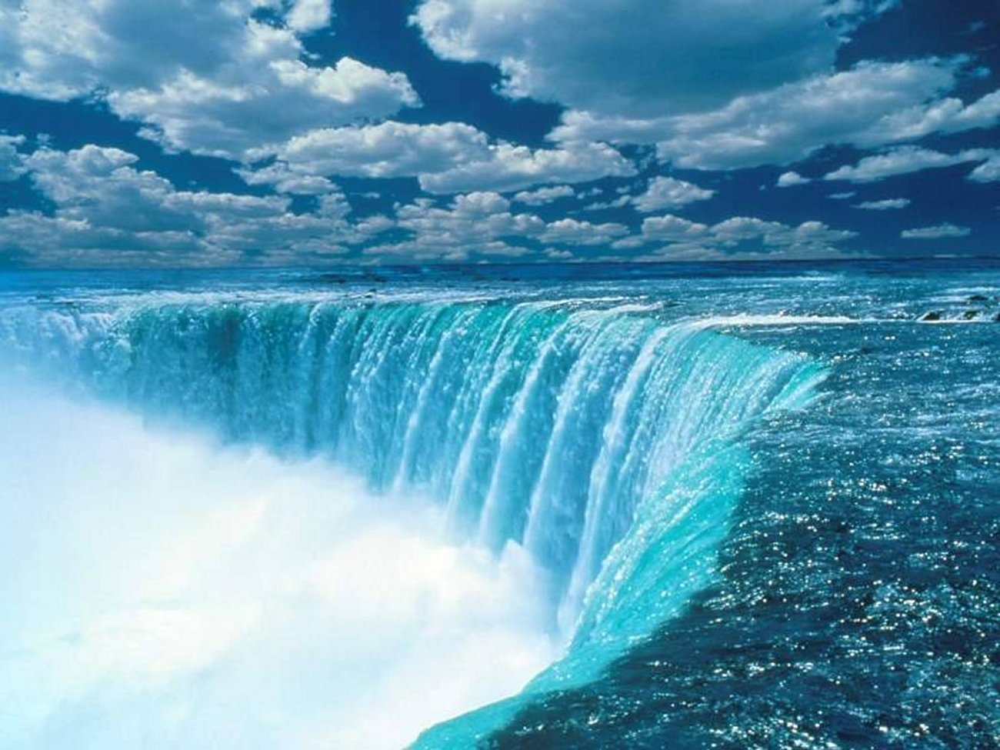
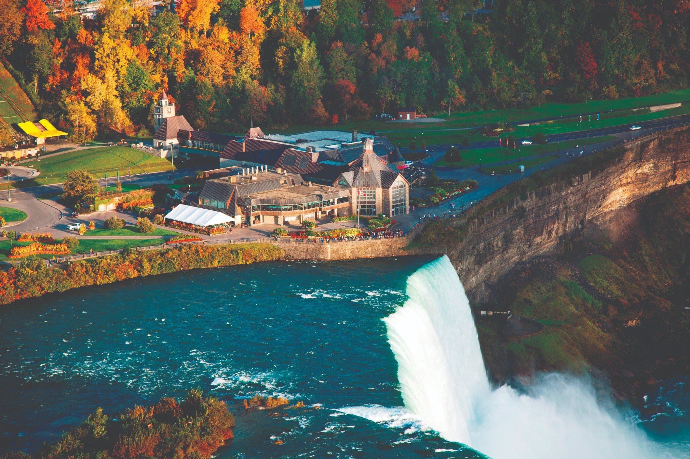
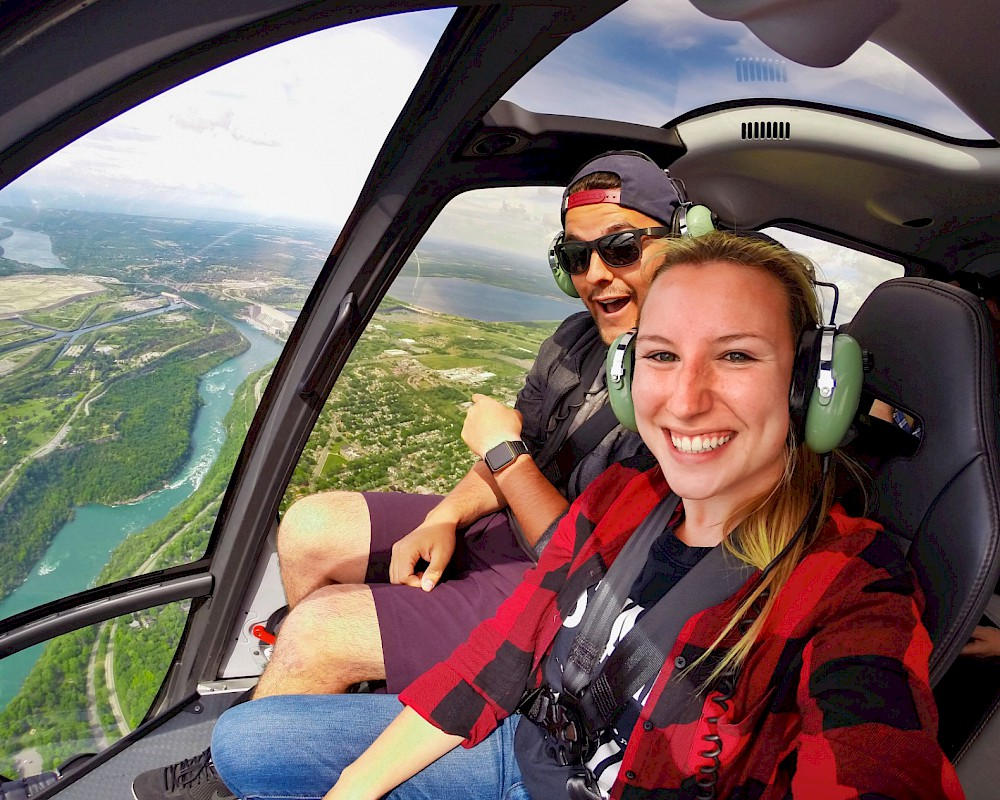
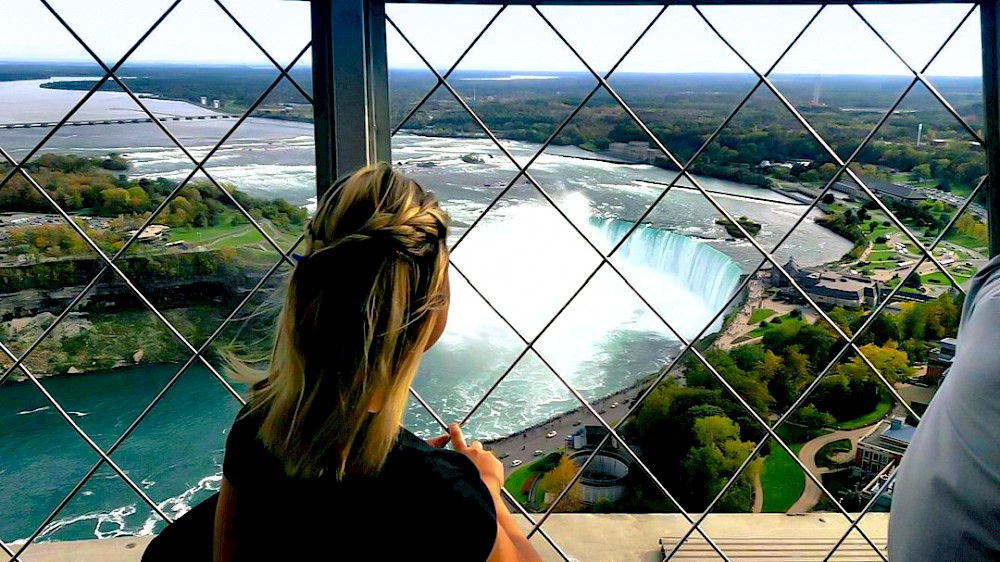
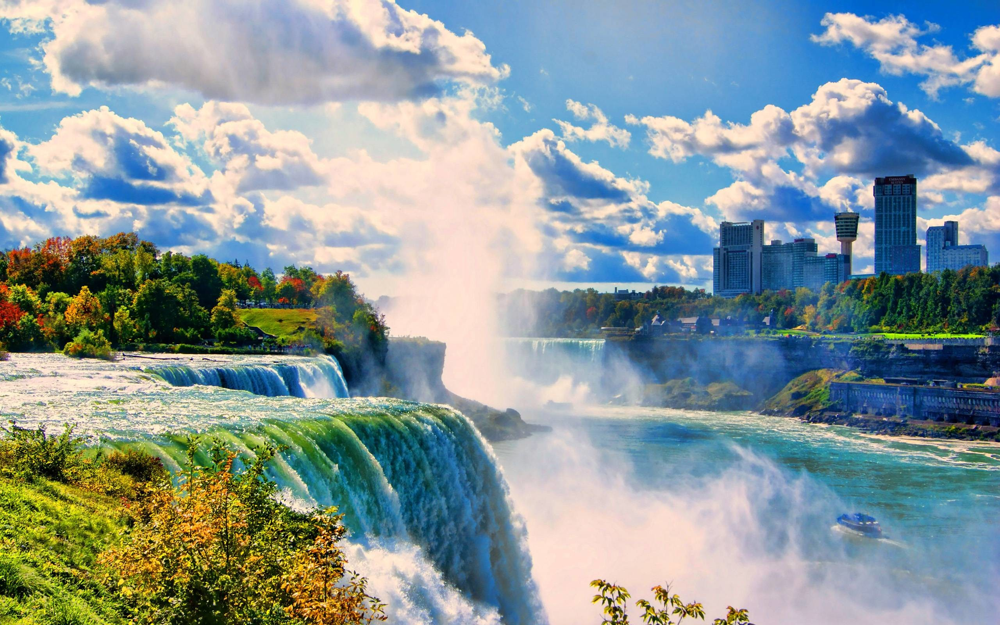
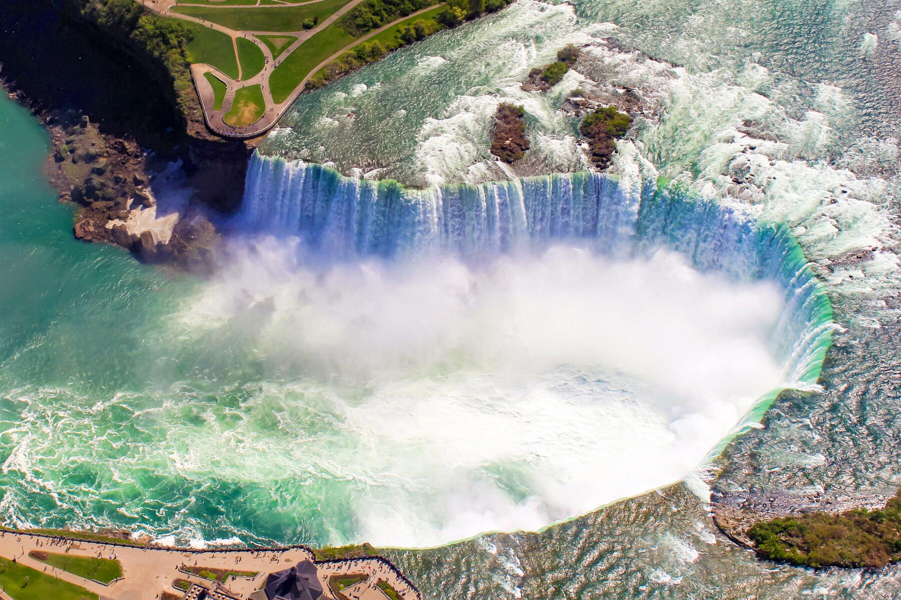
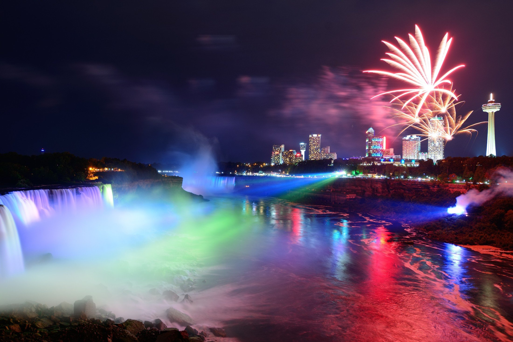
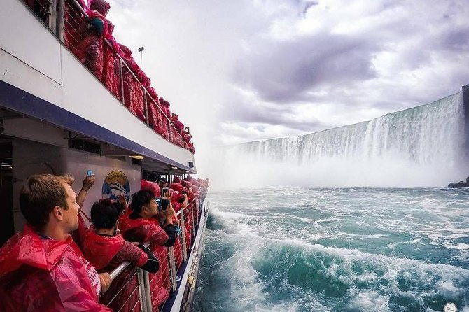

Bien qu’elles ne soient pas particulièrement hautes (57 m), les chutes du Niagara sont très larges. Avec un débit de plus de 2 800 m3/s, elles sont les chutes les plus puissantes d’Amérique du Nord et parmi les plus connues à travers le monde.
Renommées pour leur beauté, les chutes du Niagara sont aussi une source immense d’énergie hydroélectrique et leur préservation est un défi écologique. Cette merveille naturelle, haut-lieu du tourisme depuis plus d’un siècle, est partagée par les villes jumelles de Niagara Falls (New York) aux États-Unis et Niagara Falls (Ontario) au Canada
Décider quel est le meilleur endroit pour voir Niagara Falls peut être difficile - donc, découvrez nos recommandations et décidez par vous-même. Classées selon la distance à partir des chutes, ces vues spectaculaires inoubliables sont uniques sur cette planète!
Planez à 457 mètres au-dessus des chutes pour obtenir des vues aériennes parfaites, une aventure à ne pas rater, disponible en toute saison!
Dominant le ciel à une hauteur de 236 mètres, la seule chose encore plus époustouflante que cette vue fantastique est l’ascenseur avec des panneaux de verre qui vous laissera bouche bée!
Cette vue épatante à 67 mètres au-dessus des chutes peut seulement être contemplée par les téméraires qui osent survoler le bord de la rivière à toute vitesse.
Les gondoles climatisées sont adaptées à toute condition météorologique. Cette attraction tranquille à Clifton Hill offre une vue panoramique de la ville 53 mètres au-dessus des cascades.
La base de Table Rock vous permettra de vous rapprocher le plus possible des chutes – à seulement 3 mètres.
Le nom de cette attraction vous dit tout, vous descendrez 38 mètres sous terre pour apercevoir la vue arrière des chutes Horseshoe Falls.
Cette croisière emblématique en bateau vous entraînera jusqu’à l’antre de la bête! Contemplez des vues impressionnantes (avec une petite douche) en navigant vers les chutes, à 51 mètres du sommet des chutes.
